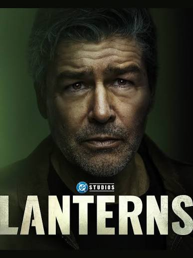
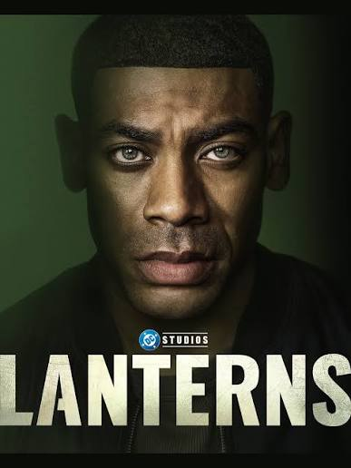

A hardened veteran who has looked into the cosmic abyss and refused to blink. He is no longer the brash rookie, but a stoic, cynical lawman carrying the heavy scars of a lifetime policing the stars. Forced to mentor the reluctant new recruit John Stewart, he brings a sharp, relentless edge to Earth's cosmic defense—a man operating on pure, unyielding willpower, even as the universe unravels around him.

A former Marine sniper and brilliant architect who constructs his emerald reality from the inside out—never hollow, always down to the last meticulous nut and bolt. Stepping out of a traumatizing past and onto a collision course with a relentless universe, he brings an intentional, sharp-edged gravity to the badge. Even under the merciless initiation of an antagonistic mentor, John stands defiant, wielding a clinical focus and an indomitable will capable of tearing down the dark heart of a cosmic conspiracy.
